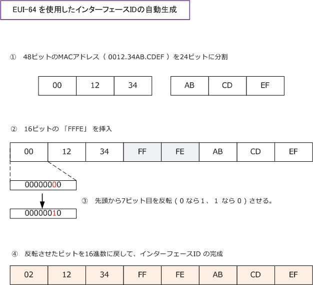

IPv6 - EUI-64
IPv6アドレス - EUI-64で自動生成するインターフェースID
IPv6アドレスは、64ビットのプレフィックスと、64ビットのインターフェースIDにより構成されます。 インターフェースIDは「手動で設定する方法」か「自動で生成する方法」のどちらかで構成できます。
自動で生成する場合、EUI-64と呼ばれるフォーマットを使用して自動生成します。EUI-64は、IEEEに よって標準化された64ビット長の識別子です。EUI-64による自動生成は、48ビットのMACアドレスの 中央に16ビットの「FFFE」を追加して64ビットに拡張することでインターフェースIDが生成されます。

※ これらは自動で行われるのでユーザは意識する必要はありませんが、EUI-64による自動生成の仕組みを知っておきましょう。
Ciscoルータの場合は、グローバルユニキャストアドレスとユニークローカルアドレスは ipv6 address の設定 コマンドの後にeui-64と指定することでインターフェースIDが自動で生成されます。リンクローカルアドレス の場合、インターフェースでIPv6が有効になった時点で自動でEUI-64でインターフェースIDが生成されます。
IPv6 - 特殊なIPv6アドレス
① ループバックアドレス IPv6のループバックアドレスは「0：0：0：0：0：0：0：1」となります。一般的に「：：1」と表記します。
② 未指定アドレス 全ビットが 0 のアドレス「 0：0：0：0：0：0：0：0 」を未指定アドレスと呼びます。IPv6アドレスの自動 取得する場合などに送信元アドレスとして使用されます。未指定アドレスは一般的に「：：」と表記します。
③ IPv4互換アドレス 先頭の96ビットが全て 0 で、残りの32ビットが「IPv4アドレス」を使用するアドレスを、IPv4互換アドレス と呼びます。例えば「：：192.168.0.1」と表記します。現在、このIPv4互換アドレスは廃止されています。
④ IPv4射影アドレス 先頭の80ビットが「全て 0 」で、次の16ビットが「全て 1」、残りの32ビットがIPv4アドレスを使用する アドレスをIPv4射影アドレス（ IPv4-mapped address ）と呼びます。例えば「：：FFFF：192.168.0.1」 と表記します。このアドレスはIPv6端末が、IPv4しかサポートしていない端末と通信する際に使用されます。